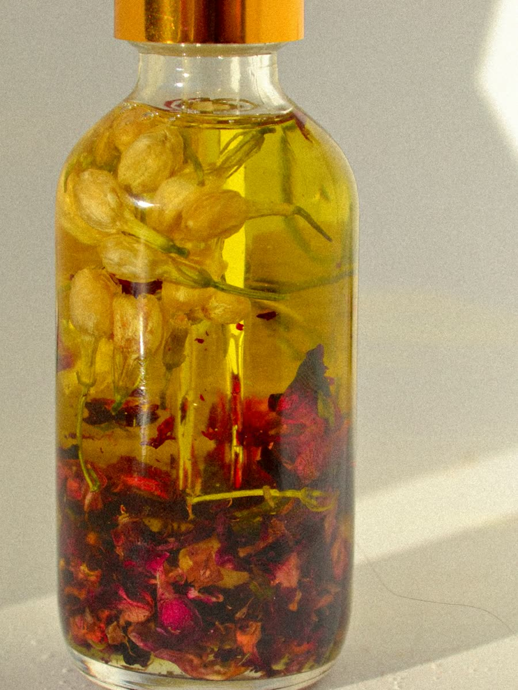
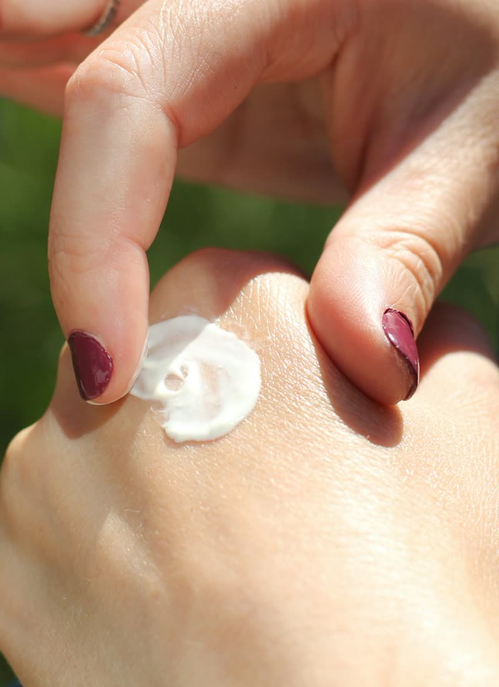
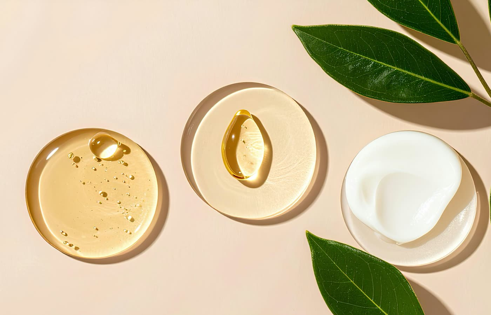
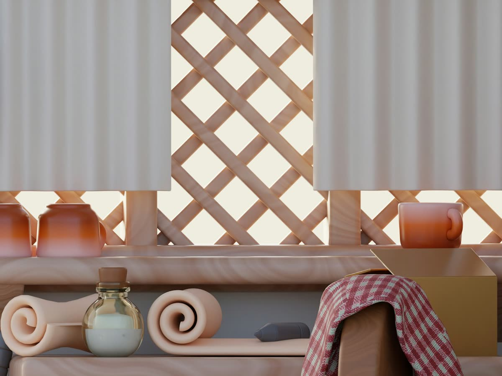
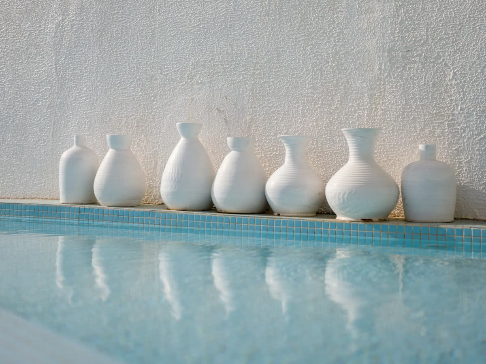

ONE GUEST AT A TIME
예약하신 시간에는 다른 손님을 받지 않습니다. 그날 피부를 보고 쓸 것을 정합니다.


WHAT WE USE
바르는 것을 늘리지 않습니다. 피부 상태에 따라 세 가지의 순서와 양만 바꿉니다.

오일
마른 피부에 먼저 올려 길을 엽니다
젤
열이 오른 피부를 가라앉힙니다
크림
마지막에 덮어 수분을 붙잡습니다


THE FLOW
I맞이
따뜻한 수건과 차를 먼저 냅니다. 오늘 피부가 어땠는지 천천히 듣습니다.
II관리
그날 피부에 맞는 앰플을 골라 한 방울씩 올리고 손으로 눌러 줍니다.
III쉼
끝난 뒤에도 서두르지 않습니다. 조용한 자리에서 쉬다 가세요.
CARE MENU
기본 관리
세안 · 각질 · 진정 팩
60분
70,000
수분 관리
앰플을 여러 번 올리는 보습
80분
95,000
탄력 관리
손으로 하는 얼굴 마사지
90분
120,000
등 관리
세정 · 각질 · 진정
60분
80,000
어깨 풀기
오일로 푸는 목과 어깨
50분
65,000
얼굴과 등
두 가지를 이어서
120분
140,000
메뉴와 가격, 시간은 예시입니다
RESERVATION
화요일 ~ 토요일 10:00 ~ 20:00 · 예약제
○○시 ○○구 ○○로 00, 2층 · 02-000-0000